5505 INSTRUMENT/GAUGE ELECTRICAL CIRCUITS
- Path
- Descriptions > 55 ELECTRICAL EQUIPMENT > 5505 INSTRUMENT/GAUGE ELECTRICAL CIRCUITS
- Kind
- system description
- Applies to
- all engines; all production periods
- Interactive page
- https://sloeber94.github.io/elrnDB-aBrrSpdr/en/#/946001230
Applies to: all engines; all production periods
Structure of electrical/electronic system
The electrical equipment on this vehicle uses the F.L.Ore.N.C.E. structure developed specifically to incorporate the most up to date electronic functions in an optimum manner.
This structure makes up the car's nervous system, directly controlling all the bodywork functions (access control, visibility, on board information, comfort, etc.) and communicates with the various chassis and power unit subsystems, improving system fault diagnosis, reliability, weight and cost.
A further advantage compared with traditional systems is simplified installation, thanks to a reduced number of control units (the same number of functions are offered to customers) and power and signal connections, through the extensive use of serial communication networks (3 CAN twin wire communication networks, 1 single wire LIN sub network, 1 A-BUS single wire sub network).
Power distribution takes place by means of four junction units and relay/fuse boxes, connected to the control elements (static actuators and relays). These control units also act as an interconnection for the wiring and as an electrical distributor to ensure the maximum level of electrical protection and the minimum degree of wiring complexity.
Electronic components
The main electronic components managed by the "F.L.Ore.N.C.E." structure are listed below:
Electronic components | Wiring diagram code |
|---|---|
Body Computer Node | M001 |
Engine Management Node | M010 |
Automatic Transmission Node | M055 |
Automatic Transmission Selector Node | M053 |
Robotised Gearbox Node | M054 |
Electric Steering Lock Node | M089 |
Volumetric Sensors Control Unit | K061, K062 |
Anti-theft Alarm Control Unit | P090 |
Instrument Panel Node | E050 |
Auxiliary Instruments | E020 |
Info-Telematic Node | P020 |
CD-Changer Node | P075 |
Bose hi-fi audio amplifier | P070 |
Radio Receiver Node | P020 |
Steering Wheel Node with radio controls | D047 |
Bluetooth Control Unit Node | M162 |
Driver's Door Node | M066 |
Passenger Door Node | M067 |
Hood Control Node (Spider only) | M187 |
Wiper Electronic Control Unit | N015 |
Dusk and rain sensor | P065 |
Braking Node | M050 |
Steering Angle Node | K058 |
Yaw Node | K074 |
Air Bag Node | M060 |
Climate Control Node | M070 |
Tyre Pressure Control Unit | M047 |
Parking Sensor Node | M084 |
TEG Reader Node | H003 |
Control modules
The F.L.Ore.N.C.E. structure provides for the inclusion of the user controls inside the switch holder modules, following the functional grouping logic and the proximity of the most frequently used controls.
Control modules | Wiring diagram code |
|---|---|
Driver's door control module (front and rear electric windows, driver's door folding mirrors) | H044 |
Passenger electric windows control | H050 |
Light Control in dashboard (fog lights, rear fog lights, parking lights, km zeroing, headlamp alignment) | H090 |
Starting control in dashboard | H002 |
Steering wheel interface module (controls for lights, screen washing and wiping, cruise control, trip meter, lighting adjustment, vehicle set up) | H005 |
Controls on tunnel (central locking, hazard warning lights, ASR and VDC exclusion) | H035 |
Controls in courtesy light | G010 |
Electric seat controls | H066, H067 |
Electric power control unit (fuse boxes)
There is a wired type control unit in the luggage compartment (CVB) and three fuse/relay boxes constructed using sheared circuit technology:
- Dashboard Control Unit (CPL) in dashboard
- Engine Compartment Control Unit (CVM) in engine compartment
- Battery Control Unit (CBA) and Optional Fuses Control Unit (CFO), above the battery
Fuse boxes | Wiring diagram code |
|---|---|
Battery Control Unit CBA | B099 |
Optional Fuses Control Unit | B098 |
Engine Compartment Control Unit CVM | B001 |
Dashboard Control Unit CPL | B002 |
Luggage Compartment Control Unit CVB | B045 |
Network structure
The completed structure comprises three CAN communication networks connected by a gateway for transferring shared information:
- C-CAN network (low speed: 500 kbit) for dynamic vehicle control
- B-CAN network (high speed: 50 kbit) for managing bodywork functions
- CAN network for multimedia functions.
The gateway for communication between the C-CAN and B-CAN is located in the Body Computer.
The diagnosis of the nodes connected to the B-CAN network is carried out via the CAN, whilst the diagnosis for those connected to the C-CAN network is carried out by means of the specific K lines (5 ISO serial lines for diagnosis).
The K lines and the B-CAN network flow into the EOBD diagnostic connector centrally located on the Body Computer.
There are also the W line, ISO 5 serial for immobilizer recovery and the A-BUS line, the ISO 5 serial for the alarm, wiping, lighting, tyre pressure monitoring functions.
C-CAN NETWORK.
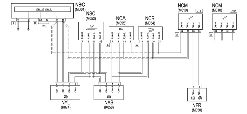
B-CAN NETWORK.
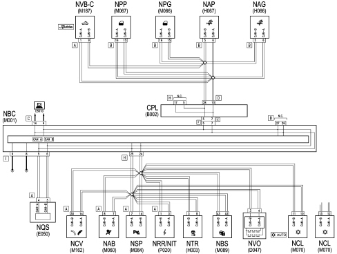
K SERIAL LINE
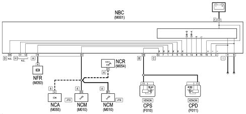
A-BUS LINE
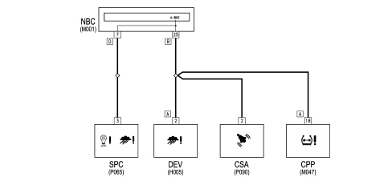
The following are illustrated in detail below:
- Battery Control Unit CBA and Optional Fuses Control Unit CFO
- Engine Compartment Control Unit CVM
- Dashboard Control Unit CPL
- Luggage Compartment Control Unit CVB
- Body Computer Node NBC
The other components are described where the function to which they refer is illustrated (e.g. Air Bag Control Unit in 5580C), except for the nodes that control the opening of the doors and the components located on them (electric windows, etc.):
- Driver's Door Node NPG
- Passenger Door Node NPP
Replacing and initializing network nodes
Some of the CAN nodes are programmed with default settings which the customer will discover on acquiring the vehicle.
The nodes storing this information are the:
- Body Computer;
- Instrument Panel Node;
- Climate Control System Control Unit;
- Driver and passenger door nodes;
- Steering Lock Node.
Door nodes initialization procedure
Following a power supply failure to the control units (for example, battery disconnected) the system must be initialized once again, following the instructions below and working with the ignition key to MAR (TEG inserted) and the doors and windows closed.
- completely open the driver's door window, keeping the operating button pressed for at least 3 seconds after the (lower) end of travel position;
- completely close the driver's door window, keeping the operating button pressed for at least 3 seconds after the (upper) end of travel position;
- carry out the same operations for the passenger window;
- make sure that the initialization is correct by checking that the windows work properly in automatic mode.
Battery disconnection
If the battery is disconnected:
- Body Computer;
- Instrument Panel Node;
- Climate Control System Control Unit;
- Steering Lock Node.
They keep the information received and do not need to be initialized after the battery is disconnected, whilst the other nodes lose some or all of the information memorized.
CONTROL UNIT ON BATTERY (CBA)
This connects the battery terminal to the starter motor lead and to the first level power fuses that protect the supply for the engine compartment control unit (CVM), the dashboard control unit (CPL) and the luggage compartment control unit (CVB), where the second level protective fuses are located.

1 - Fuse box casing
2 - Control unit bolts
3 - Positive battery terminal
4 - Fuse (F71)
5 - Fuse (F72) n.c.
6 - Fuse (F73)
7 - Fuse (F70)
8 - Automatic battery disconnector
9 - Starter motor lead
No. | CODE | Fuses in control unit (CBA) | Amperage | Connector |
|---|---|---|---|---|
4 | F71 | for dashboard control unit (CPL) | 70A | C |
5 | F72 | - | 60A | D |
6 | F73 | for pre-heating control unit (JTD only) | 60A | E |
7 | F70 | for engine compartment control unit (CVM) | 150A | B |
Automatic battery disconnection device
The CBA incorporates an automatic battery disconnection device in series to the battery terminal which is capable of interrupting the power supply to the starter/recharging motor lead in emergencies.
This interruption is controlled by the inertia switch in the same way as for the fuel pump.
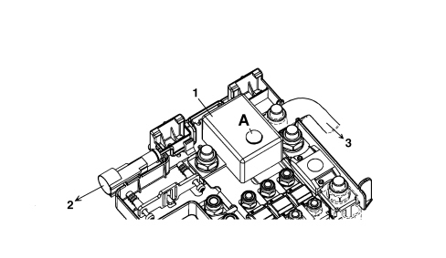
1 - Battery disconnection device
2 - Line from inertia switch
3 - Starter motor / alternator supply lead
A - Device re-arming button
Optional fuses control unit
Next to the CBA there are two additional fuses for versions which have an additional heater (JTD only): F74 (30A) and F76 (50A).
ENGINE COMPARTMENT CONTROL UNIT (CVM)
Electro-mechanical control unit including fuses (Maxi and Mini), relays and circuits for connecting the front wiring and radiator pre-wiring.
This wiring is connected to the control unit by fixed couplings. There is a chamber under the protective cover for housing any further connectors/relays/fuses.
There is a fastening on the lower cover for sealed fuse holder connectors (maxi and auto type).
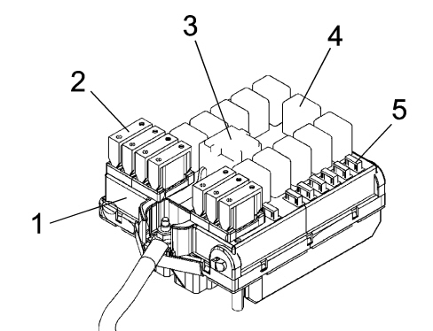
1 - Engine compartment control unit (CVM)
2 - System protective maxifuse
3 - Maxi type relay
4 - Micro type relay
5 - System protective mini fuses
The engine compartment control unit (CVM) is illustrated below.

On the most complete version the engine compartment control unit protects the electrical system with the following fuses:
CODE | COMPONENT | amp. | TYPE |
|---|---|---|---|
F-1 | FUSE CPL and CVB | 70 | MAXI |
F-2 | CLIMATE CONTROL FAN FUSE | 40 | MAXI |
F-3 | FUSE STEERING LOCK (NBS) | 20 | MAXI |
F-4 | FUSE BRAKING NODE (NFR) | 40 | MAXI |
F-5 | FUSE BRAKING NODE (NFR) | 40 | MAXI |
F-6 | FUSE RADIATOR FAN 1 | 40 | MAXI |
F-7 | FUSE RADIATOR FAN 2 | 50 | MAXI |
F-8 | FUSE ROBOTIZED GEARBOX PUMP | 30 | MAXI |
F-9 | FUSE HEADLAMP WASHER | 20 | mini |
F-10 | FUSE HORNS | 15 | mini |
F-11 | FUSE I.E. SECONDARY SERVICES | 15 | mini |
F-14 | FUSE RIGHT MAIN BEAM HEADLAMP | 10 | mini |
F-15 | FUSE LEFT MAIN BEAM HEADLAMP | 10 | mini |
F-16 | FUSE I.E. INT SYSTEM | 7,5 | mini |
F-17 | FUSE I.E. MAIN SERVICES | 10 | mini |
F-18 | FUSE IE CONTROL UNIT, CAE AND ROB. GEARBOX | 15 | mini |
F-19 | FUSE COMPRESSOR | 7,5 | mini |
F-20 | Wiring | 20 | mini |
F-21 | FUSE FUEL PUMP | 20 | mini |
F-22 | FUSE IGNITION COILS/INJECTORS | 15 / 20 | mini |
F-23 | FUSE RADIO/NAVIGATOR | 15 | mini |
F-24 | FUSE CAE CONTROL UNIT AND ROB. GEARBOX | 15 | mini |
F-30 | FUSE FOG LIGHT | 15 | mini |
The relays housed in the engine compartment control unit are:
CODE | COMPONENT | amp. | TYPE |
|---|---|---|---|
T02 | MAIN BEAM HEADLAMPS RELAY | 20 | micro |
T03 | HORN RELAY | 20 | micro |
T05 | COMPRESSOR RELAY | 20 | micro |
T06 | RADIATOR FAN 1ST SPEED RELAY | 30 | micro |
T07 | RADIATOR FAN 2ND SPEED RELAY | 50 | MAXI |
T08 | Wiring | 30 | micro |
T09 | INJECTION RELAY | 30 | micro |
T10 | FUEL PUMP RELAY | 20 | micro |
T14 | FOG LIGHTS RELAY | 20 | micro |
T17 | HEADLAMP WASHER RELAY | 20 | micro |
T19 | Wiring | 20 | micro |
T20 | REVERSING LIGHTS RELAY (CAE) AND SHIFT LOCK (ROB. GEARBOX) | 20 | micro |
Rear view

DASHBOARD CONTROL UNIT (CPL)
It is located on the Body Computer (NBC).
The electro-mechanical control unit (CPL) and the body computer electronic node (NBC), fitted in the area under the dashboard to the left of the steering wheel, are connected to each other and make up a single unit known as the dashboard node (NPL). The control unit is equipped with fuses and relays.
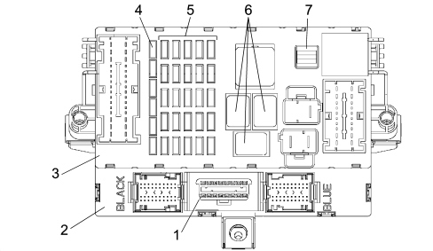
1 - Diagnostic socket EOBD connector
2 - Body Computer (NBC)
3 - Dashboard Control Unit (CPL) fitted on the NBC node (CPL+NBC=NPL: Dashboard Node)
4 - Reserve fuses
5 - System protective fuses
6 - Relays
7 - Fuse extraction pliers
The front view of the control unit is illustrated in the diagram below.
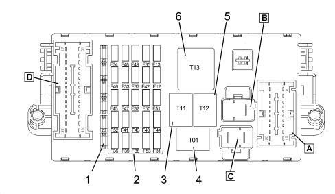
1 - Reserve fuses
2 - Protective fuses
3 - Heated rear windscreen relay (T11)
4 - Dipped headlamps relay (T01)
5 - Key discharge relay 1 (T12)
6 - Key discharge relay 2 (T13)
The CPL dashboard control unit protects the electrical system with the following fuses:
CODE | COMPONENT | amp. | TYPE |
|---|---|---|---|
F-12 | FUSE RIGHT DIPPED HEADLAMP | 15 | mini |
F-13 | FUSE LEFT DIPPED HEADLAMP/CAF | 15 | mini |
F-31 | FUSE RELAY COILS INT/A | 7,5 | mini |
F-32 | FUSE DOOR NODES, TEG READER | 15 | mini |
F-33 | spare | - | mini |
F-34 | spare | - | mini |
F-35 | FUSE REVERSING LIGHT, CRUISE CONTROL SYSTEM CONTROL, AQS SENSOR, WATER IN DIESEL FILTER | 7,5 | mini |
F-36 | spare. | - | mini |
F-37 | FUSE BRAKE LIGHTS, NQS, XENON HEADLAMPS | 10 | mini |
F-38 | FUSE BOOT RELEASE | 15 | mini |
F-39 | FUSE RADIO, VOLUME SENSOR, DIAGNOSTIC SOCKET (EOBD), WIRING FOR RADIO PHONE, NCL, NPG, NVB, NIT, BLUE&ME | 10 | mini |
F-40 | FUSE HEATED REAR WINDSCREEN | 30 | mini |
F-41 | FUSE HEATED WINDSCREEN/MIRRORS | 7,5 | mini |
F-42 | FUSE (INT) NFR | 7,5 | mini |
F-43 | FUSE WINDSCREEN WIPER/TWO-WAY PUMP | 30 | mini |
F-44 | FUSE CIGAR LIGHTER | 10 | mini |
F-45 | FUSE NOT USED | 20 | - |
F-46 | FUSE SLIDING BLIND | 20 | mini |
F-47 | NPG POWER SUPPLY FUSE (L.G.) (unused) | 20 | mini |
F-48 | NPG POWER SUPPLY FUSE (L.P.) (unused) | 30 | mini |
F-49 | FUSE (INT) CONTROLS/SECONDARY SERVICES LIGHTING ) NIT, TEL. WIRING , BLUE&ME (UP TO 03/07) | 7,5 | mini |
F-50 | FUSE (INT) AIR BAG | 7,5 | mini |
F-51 | FUSE (INT) CAR RADIO (NRR) NIT, TEL. WIRING, BLUE&ME (FROM 04/07) | 7,5 | mini |
F-52 | FUSE REAR WIPER | 15 | mini |
F-53 | FUSE +30 DIRECTION INDICATORS/HAZARD WARNING LIGHTS, NQS | 10 | mini |
Rear view

LUGGAGE COMPARTMENT CONTROL UNIT (BRERA)
The rear control unit is located in the luggage compartment, on the left side panel:
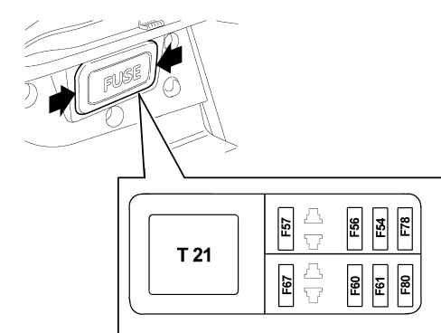
Fuses
The following fuses are housed in the luggage compartment control unit:
CODE | COMPONENT | Amp. |
|---|---|---|
F-54 | HIFI amplifier fuse | 30 A |
F-56 | Driver's seat movement fuse | 25 A |
F-57 | Driver's seat heating fuse | 7.5 A |
F-60 | Passenger seat movement fuse | 25 A |
F-61 | Amplifier fuse | 15 A |
F-67 | Passenger seat heating fuse | 7.5 A |
F-78 | Driver side window fuse | 30 A |
F-80 | Passenger side window fuse | 30 A |
Relays
There is also a relay in the luggage compartment control unit:
CODE | COMPONENT | Amp. |
|---|---|---|
T21 | Seat heating/movement relay | 50 A |
LUGGAGE COMPARTMENT CONTROL UNIT (SPIDER)
The rear control unit is located in the luggage compartment, on the left rear side panel.
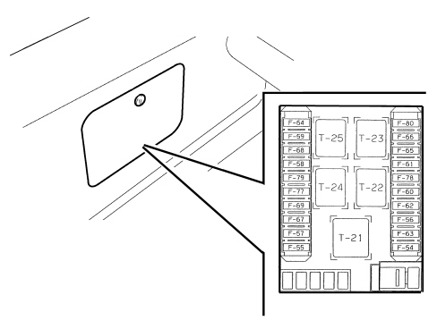
Fuses
The following fuses are housed in the luggage compartment control unit:
CODE | COMPONENT | AMP. |
|---|---|---|
F-54 | HIFI amplifier fuse | 30 A |
F-56 | Driver's seat movement fuse | 25 A |
F-57 | Driver's seat heating fuse | 7.5 A |
F-60 | Passenger seat movement fuse | 25 A |
F-62 | Hood control pump fuse | 30 A |
F-63 | Hood control unit fuse | 20 A |
F-67 | Passenger seat heating fuse | 7.5 A |
F-78 | Driver side window fuse | 30 A |
F-80 | Passenger side window fuse | 30 A |
Relays
The following relays are housed in the luggage compartment control unit:
CODE | COMPONENT | AMP. |
|---|---|---|
T21 | Seat heating relay | 50 A |
BODY COMPUTER NODE (NBC)
The Body Computer Node (NBC), a component which manages many functions micro-electronically, is connected to the dashboard electro-mechanical control unit (CPL) and they are located in the area under the dashboard to the left of the steering wheel and make up a single unit known as the dashboard node (NPL).
Both the electronic and electro-mechanical sections also carry out functions of connecting with the system and have fixed connectors for connection with the front, rear and dashboard wiring.
The fuses and relays are fitted on the electromechanical part whilst there is a fixed connector for the EOBD on the electronic section. This connector is used for fault diagnosis/programming via the K line for the NCM, NFR, NCR, CAB and fault diagnosis/programming via the B-CAN line for the components with this interface.

A- NBC control unit front view
B - NBC control unit rear view
1 - Connector F 20 PIN
2 - Connector D/E 20+20 PIN
3 - Connector C (EOBD diagnostic socket)
4 - Connector A/B 20+20 PIN
5 - Connector G 9 PIN
6 - Connector H 18 PIN
7 - Connector I 9 PIN
Body computer control unit nbc pin out
Connector F (20-way): CONNECTOR F: CONNECTION BETWEEN BODY COMPUTER (NBC) AND DASHBOARD CONTROL UNIT (CPL) (CONNECTOR E)

Pin | Function |
|---|---|
1 | +30 from F-38 for unlocking boot |
2 | Left/right brake lights control signal |
3 | Reverse gear engagement positive signal |
4 | Not available |
5 | B-CAN B for CPL |
6 | Negative signal controlling heated rear windscreen relay coil (T11) |
7 | B-CAN A for CPL |
8 | Negative signal controlling dipped headlamps relay coil (T01) |
9 | INT for NBC |
10 | Rear windscreen release gear motors (spare) |
11 | Boot unlocking geared motors |
12 | Side/parking lights control positive signal from steering wheel interface (wiring) |
13 | INT from F-37 |
14 | Negative signal controlling services relay coil 2 (T13) |
15 | INT for F-51 |
16 | Not available |
17 | +30 from F-39 for anti-theft alarm EOBD diagnostic socket, climate control, puddle lights |
18 | +30 for NBC (immobilizer, CAN, side lights, rear fog lamps, SBMT driver, + LIGHTS control driver) |
19 | +30 from F-53 for direction indicators/hazard warning lights, NQS |
20 | Central locking earth |
Connector D/E (40 way) black

Pin | Function |
|---|---|
1 | Driver's door opening negative signal for NCR (unused) |
2 | Left side direction indicator activation (unused) |
3 | Right rear direction indicator activation |
4 | Fuel level signal from tank |
5 | Left rear side light activation |
6 | Right rear side light activation |
7 | Serial line with rear view mirror (rain sensor, dusk sensor, demisting sensor) |
8 | Negative signal from NO switch signalling front driver's door open |
9 | Left no. plate light activation |
10 | Sun roof closing command negative signal (unused) |
11 | Passenger door opening signal on door pillar (unused) |
12 | Left rear direction indicator activation |
13 | Right side direction indicator activation (unused) |
14 | Negative signal from NO switch indicating handbrake applied |
15 | Fuel level signal from tank (negative) |
16 | Negative signal from anti-tilt sensor |
17 | Negative signal from inertia switch |
18 | K line (unused) |
19 | Volumetric and anti-tilt alarm deactivation control negative signal |
20 | Volumetric and anti-tilt sensor power supply |
21 | Centre front courtesy light timer/dimmer negative control |
22 | Right rear brake light activation |
23 | +30 SBMT rear courtesy light |
24 | Boot not properly shut signal |
25 | Negative signal from NO switch signalling passenger front door open |
26 | Negative signal from alarm volumetric sensors |
27 | +30 from F-39 front courtesy light |
28 | Analogue signal from front courtesy light activation control (unused) |
29 | Fixed courtesy light activation control positive signal (unused) |
30 | Timed negative control for courtesy light (unused) |
31 | Left rear fog lamp activation |
32 | Left brake light activation |
33 | +30 SBMT driver's/passenger visor, boot light |
34 | Negative signal from rear screen opening switch (unused) |
35 | Negative signal from boot opening button |
36 | Negative signal from NO switch signalling boot open |
37 | Rear courtesy light timer/dimmer control (unused) |
38 | Right no. plate light activation |
39 | +30 from F-39 CPP |
40 | Activation of current socket lighting dependent on the side lights |
- Connector C for EOBD diagnostic socket (16 way)

Pin | Function |
|---|---|
1 | K line for NFR |
2 | Not available |
3 | K line for AIR BAG |
4 | Power earth |
5 | Earth signal |
6 | B-CAN B for diagnosis |
7 | NCM and NCA fault diagnosis |
8 | K line immobilizer |
9 | Wiring (unused) |
10 | Not available |
11 | Not available |
12 | Front wiring (unused) |
13 | Wiring (unused) |
14 | B-CAN A for diagnosis |
15 | L line (wiring) |
16 | + Battery for EOBD socket from F-39 |
- Connector A/B (40-way) blue

Pin | Function |
|---|---|
1 | Reverse gear engagement positive signal for steering wheel interface |
2 | Left side repeater activation |
3 | Screening (immobilizer aerial) (unused) |
4 | Immobilizer aerial (unused) |
5 | Immobilizer aerial (unused) |
6 | Two-way serial line with NFR (unused) |
7 | Speedometer signal input from NFR |
8 | Fog light relay coil control negative signal |
9 | Main beam headlamps relay coil control negative signal |
10 | INT from F-37 for xenon headlamps |
11 | +30 from F-39 (wiring) |
12 | Volumetric and anti-tilt alarm deactivation control negative signal |
13 | Positive signal from steering wheel interface for headlamp washer control |
14 | Headlamp washer relay coil control negative signal |
15 | Earth for speedometer impulse generator on gearbox (unused) |
16 | K line for NFR |
17 | Speedometer signal input from impulse generator on gearbox (unused) |
18 | Brake fluid level negative signal from N.C. switch |
19 | Recharging warning light control (alternator D+ signal) |
20 | K line for NCM and NCA diagnosis |
21 | Aerial for RF receiver (earth) (unused) |
22 | Right side direction repeater activation |
23 | Signal from left/right front brake pad wear sensor |
24 | Negative signal from NC switch signalling bonnet open |
25 | Antitheft, steering wheel interface, tyre pressure control unit serial line siren |
26 | B-CAN A (wiring) |
27 | B-CAN B (wiring) |
28 | Speedometer signal repetition |
29 | Interface ISO5 for immobilizer/NCM dialogue (recovery) |
30 | Right front side light activation |
31 | Aerial for RF receiver (unused) |
32 | C-CAN L (wiring) |
33 | C-CAN H (wiring) |
34 | +30 from F-39 for anti-theft alarm |
35 | K line for NCR (unused) |
36 | C-CAN L |
37 | C-CAN H |
38 | Left front direction indicator activation |
39 | Right front direction indicator activation |
40 | Left front side light activation |
- Connector G/H/I (9+18+9way)

Pin | Function |
|---|---|
1 | Fog lights control negative signal |
2 | LIGHT 2 negative signal |
3 | +30 from F-53 for NQS |
4 | Negative signal controlling dipped headlamps from steering wheel interface |
5 | B-CAN A for NQS |
6 | B-CAN B for NQS |
7 | Negative signal controlling right direction indicator/parking light from steering wheel interface |
8 | NBC signal earth |
9 | NBC power earth |
10 | NBC power earth (unused) |
11 | K line aggregate 2 (unused) |
12 | K line for Air Bag (unused) |
13 | Door status LED activation (negative command) (unused) |
14 | Deterrent LED activation (anti-theft signal) (positive command) |
15 | +30 SBMT (unused) |
16 | +30 SBMT compartment light |
17 | Parking lights control negative signal |
18 | Activation of lighting (with bulb) dependent on side lights, radio telephone, cigar lighter |
19 | Earth |
20 | Fog lights command negative signal (unused) |
21 | Rear fog lamp on LED activation (positive command) (unused) |
22 | Fog lights on LED activation (negative command) (unused) |
23 | Speedometer signal repetition (unused) |
24 | B-CAN B (unused) |
25 | B-CAN A (unused) |
26 | +30 from F-39 for telephone |
27 | INT/A positive signal |
28 | Negative signal controlling side lights (from steering wheel interface) |
29 | Hazard warning lights on LED activation (positive command) |
30 | Negative signal controlling left direction indicator/parking light from steering wheel interface |
31 | INT from F-37 for NQS |
32 | Heated rear windscreen command negative signal (unused) |
33 | Negative signal controlling flasher from steering wheel interface |
34 | Hazard warning light control negative signal |
35 | Rear fog lamps control negative signal |
36 | Earth for NQS |
Logistic mode
Deactivation procedure
The procedure is as follows:
- Connect the diagnostic device terminal to the vehicle EOBD socket and insert the TEG in the TEG Reader
- Check that the battery recharging warning light is in flashing mode to indicate that the Logistic Mode low consumption mode is activated.
- Deactivate the low consumption supply mode by carrying out the fault diagnosis of the Body Computer using the Examiner.
- The Body Computer and all the control units involved, on receiving the CAN message, will restore their full operation and send a confirmation message to the Body Computer node.
- Delete the error memory in all control units with a diagnostic function.
- Carry out a key OFF - key ON.
- Check that the battery recharging warning light is on constantly.
DOOR NODES
The control functions for the four doors and the boot/tailgate are carried out by several specific CAN nodes which act in connection with the Body Computer:
- DRIVER'S DOOR NODE
- PASSENGER DOOR NODE
The door nodes are located inside the relevant door panel
Door nodes
Driver's door node
The driver's door node is located inside the driver's door panel.
Its functions are listed below:
- Locking/unlocking doors/boot and fuel flap
- Electric windows with manual and automatic up/down and anti-pinch safety function
- Electric exterior mirrors
- Timed management of demisting
- Timed management of courtesy lights
- Acquisition and management of outside temperature
- Window opening/closing by remote control
- Dead-lock engagement/release
- Vehicle protection system signals

Connector D
PIN | FUNCTION |
|---|---|
1 | Fuel filler flap opening gear motor |
2 | Fuel filler flap opening gear motor |
3 | Dead lock geared motor |
4 | Door locking/unlocking geared motor |
5 | (unused) |
6 | Joint lock motors |
7 | Power earth |
8 | Electric window motor power supply |
9 | Window raising positive control |
10 | Window lowering positive control |
11 | Driver's door node direct power supply |
12 | (unused) |
Connector C/B/A
PIN | FUNCTION |
|---|---|
1 | Analogue signal from right rear window control buttons (unused) |
2 | Anti-pinch sensor (signal) |
3 | Negative signal from rear window exclusion button (unused) |
4 | Interior handle LED lighting earth (unused) |
5 | Anti-pinch sensor (signal) |
6 | Door status LED earth |
7 | Rear windows exclusion LED positive control (unused) |
8 | Door status LED positive control |
9 | Interior handle lighting led positive control (unused) |
10 | Anti-pinch sensor power supply |
11 | Anti-pinch sensor earth |
12 | Positive signal from driver's side rear spot light control button (unused) |
13 | (unused) |
14 | Driver's side rear courtesy light timer/dimmer negative control |
15 | B-CAN H |
16 | B-CAN L |
17 | Puddle lights timed negative control |
18 | Puddle lights protected power supply |
19 | Electronic earth |
20 | Analogue signal from mirror folding control |
21 | Negative signal for opening using switch on outer handle (N.C.) |
22 | Earth for lock |
23 | Negative signal from motor bar switch NC. (unlocking) |
24 | Negative signal from switch on dead-lock engagement lock |
25 | Negative signal from switch on dead-lock release lock |
26 | (unused) |
27 | Analogue signal from right rear window buttons (unused) |
28 | Electric rear view mirrors deflector control analogue signal (up/down movement) |
29 | Electric rear view mirrors deflector control analogue signal (left/right movement) |
30 | Electric rear view mirrors selection control analogue signal |
31 | Analogue signal from front passenger side electric window control buttons |
32 | Analogue signal from front passenger side electric window control buttons |
33 | Switch panel earth |
34 | Door locking/unlocking command from button |
35 | Driver's door open signal |
36 | Switch panel lighting positive control |
Connector E (connection with door mirror)
PIN | FUNCTION |
|---|---|
1 | Mirror folding activation (closing) |
2 | Signal from outside temperature sensor |
3 | Left/right mirror deflector activation |
4 | Joint mirror deflector motors |
5 | Up/down mirror deflector activation |
6 | Outside temperature sensor negative |
7 | Mirror demister protected power supply |
8 | Mirror folding activation (opening) |
9 | Mirror demister timed negative control |
10 | Horizontal position memorizing potentiometer signal |
11 | Vertical position memorizing potentiometer signal |
12 | (unused) |
13 | (unused) |
14 | (unused) |
15 | Mirror position potentiometer negative ref. |
16 | (unused) |
17 | Mirror position potentiometer power supply |
18 | (unused) |
Passenger door node
The passenger door node is located inside the passenger door panel.
Its functions are listed below:
- Door lock/release
- Electric windows with manual and automatic up/down and anti-pinch function
- Window opening/closing by remote control
- Electric exterior mirrors
Timed management of demisting
- Timed management of courtesy lights
- Dead-lock engagement/release
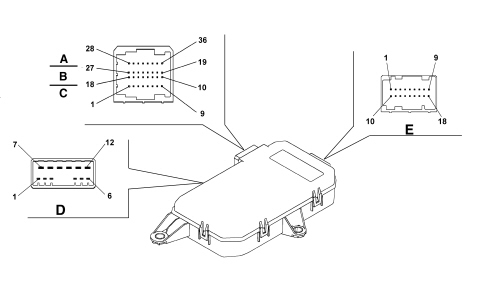
Connector D
PIN | FUNCTION |
|---|---|
1 | Door opening gear motor (negative) (unused) |
2 | Door opening gear motor (positive) (unused) |
3 | Dead lock geared motor |
4 | Door locking/unlocking geared motor |
5 | (unused) |
6 | Joint lock motors |
7 | Power earth |
8 | Electric window motor power supply |
9 | Window raising positive control |
10 | Window lowering positive control |
11 | Passenger door node power supply |
12 | (unused) |
Connector C/B/A
PIN | FUNCTION |
|---|---|
1 | (unused) |
2 | Anti-pinch sensor (signal) |
3 | (unused) |
4 | Interior handle LED lighting earth (unused) |
5 | Anti-pinch sensor (signal) |
6 | (unused) |
7 | (unused) |
8 | (unused). |
9 | Anti-pinch sensor power supply |
10 | Anti-pinch sensor earth |
11 | Rear lock deadlock motor control (unused). |
12 | Positive signal from passenger side rear spot light control button (unused) |
13 | (unused). |
14 | Passenger side rear courtesy light timer/dimmer negative control (unused) |
15 | B-CAN H |
16 | B-CAN L |
17 | Puddle lights timed negative control |
18 | Puddle lights protected power supply |
19 | Electronic earth |
20 | (unused). |
21 | Negative opening signal from switch on outer handle (unused) |
22 | Earth for lock |
23 | Negative signal from motor bar switch NC. (unlocking) |
24 | Negative signal from switch on dead-lock engagement lock. (unused). |
25 | Negative signal from switch on dead-lock release lock. (unused). |
26 | Rear lock release motor control (unused) |
27 | (unused) |
28 | (unused) |
29 | (unused) |
30 | (unused) |
31 | (unused) |
32 | Analogue signal from front passenger side electric window control buttons |
33 | Switch panel earth |
34 | (unused) |
35 | Passenger door open signal |
36 | Switch panel dimmed lighting positive control |
Connector E (connection with door mirror)
PIN | FUNCTION |
|---|---|
1 | Mirror folding activation (closing) |
2 | (unused) |
3 | Left/right mirror deflector activation |
4 | Joint mirror deflector motors |
5 | Up/down mirror deflector activation |
6 | (unused) |
7 | Mirror demister protected power supply |
8 | Mirror folding activation (opening) |
9 | Mirror demister timed negative control |
10 | Horizontal position memorizing potentiometer signal |
11 | Vertical position memorizing potentiometer signal |
12 | (unused) |
13 | (unused) |
14 | (unused) |
15 | Mirror position potentiometer negative ref. |
16 | (unused) |
17 | Mirror position potentiometer power supply |
18 | (unused) |